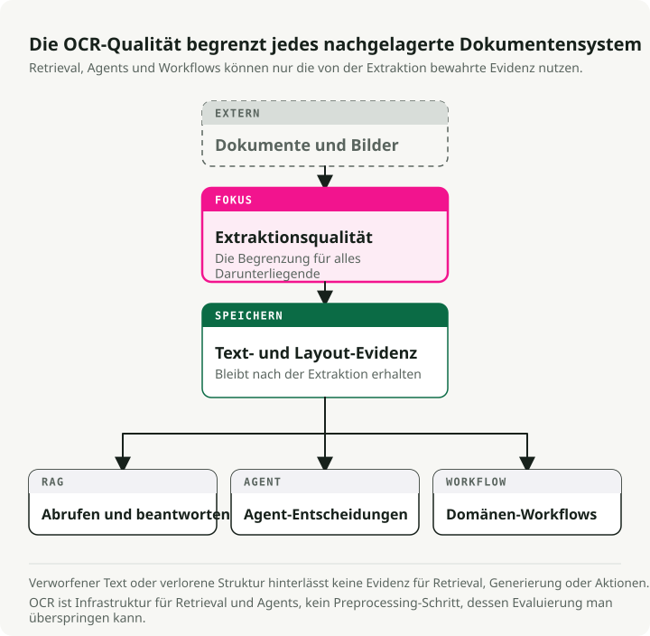
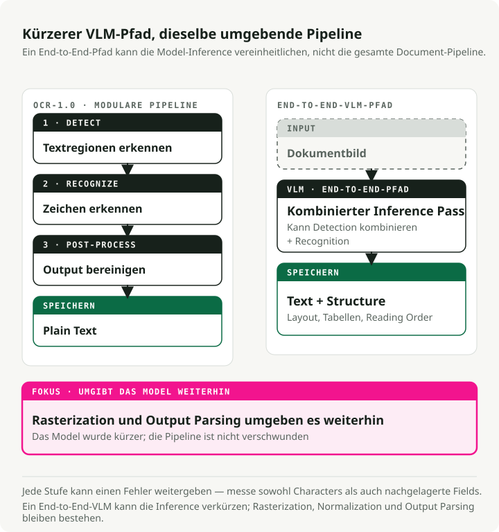
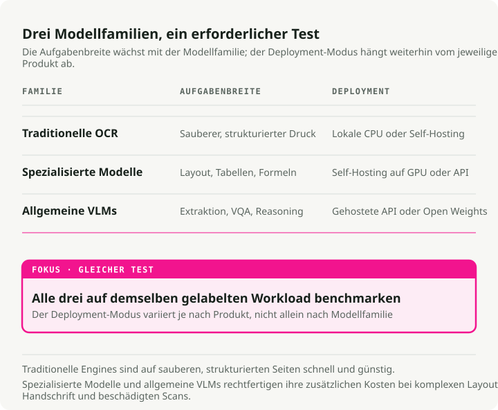
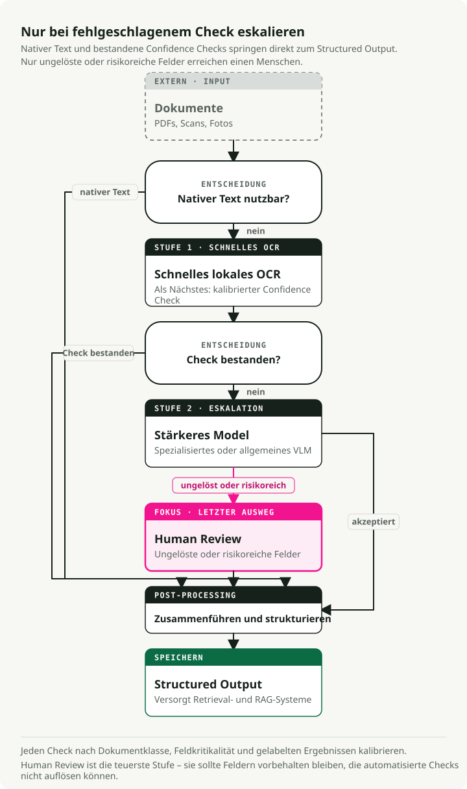

Automatische Übersetzung
Dieser Artikel wurde automatisch aus der englischen Originalversion übersetzt.
Der definitive Leitfaden für OCR im Jahr 2026: Von Pipelines zu VLMs
Das Modell, das im beliebtesten OCR-Benchmark ganz oben steht, landet bei der Qualitätsbewertung durch echte Nutzer fast ganz hinten. Das Feld bewegt sich so schnell, dass die Benchmarks nicht mehr hinterherkommen — und OCR ist wichtiger geworden als früher, weil jede RAG-Pipeline und jeder Dokumentenassistent Text zuerst hindurchschleusen muss.
Vision-Language Models (VLMs) führen bei der Textextraktion aus komplexen Dokumenten, mit 3–4× niedrigerer Character Error Rate (CER) als traditionelle Engines bei verrauschten Scans, Kassenbons und verzerrtem Text. Auf dem OCR Arena Leaderboard Anfang 2026 steht Gemini 3 Flash an der Spitze, gefolgt von Gemini 3 Pro, Claude Opus 4.6 und GPT-5.2. Allzweck-Frontier-Modelle schlagen inzwischen dedizierte OCR-Systeme auf realen Dokumenten. Open-Source-Modelle wie dots.ocr (1,7B Parameter, 100+ Sprachen) und Qwen3-VL (2B–235B) bringen dich bei nahezu null Inferenzkosten schon sehr weit.
Traditionelle Engines sind für saubere gedruckte Dokumente weiterhin die schnellste und günstigste Option, und nichts gewinnt in jedem Szenario. Dieser Leitfaden behandelt die Benchmarks, die Modelle, die Metriken und wie man das Ganze tatsächlich in Produktion bringt.
Begleit-Repo: The OCR Gauntlet — eine Single-Notebook-Demo, die 5 Dokumenttypen über 3 Modell-Tiers hinweg vergleicht (Tesseract → dots.ocr → Gemini 3 Flash), um Qualitätsabbrüche und Kosten-Trade-offs offenzulegen.
TL;DR: OCR-1.0 (modulare Pipelines) weicht OCR-2.0 (End-to-End-VLMs). Für saubere Flatbed-Scans mit einfachem Text ist traditionelle OCR (PaddleOCR/Tesseract) bei den Kosten weiterhin unschlagbar. Für komplexe Layouts, Kassenbons, Handschrift oder schiefe Fotos brauchst du VLMs. Frontier-APIs wie Gemini 3 Flash sind derzeit State of the Art; Open-Source-Modelle wie dots.ocr und Qwen3-VL sind starke selbst gehostete Alternativen.
Warum OCR jetzt wichtig ist
Über Jahrzehnte war OCR ein stilles Randgebiet der Informatik. Es digitalisierte Bibliotheksarchive, sortierte Post, trieb Accessibility-Tools für Sehbehinderte an. Wichtige Arbeit, aber Nische. Wer nicht im Dokumentenmanagement oder in der Logistik arbeitete, konnte sie problemlos ignorieren.
Das änderte sich, als LLMs Mainstream wurden. Jede RAG-Pipeline, jeder Unternehmens-Knowledge-Assistent und jeder dokumentlesende Agent stößt an dieselbe Wand: Das LLM kann nur mit Text arbeiten, den es tatsächlich lesen kann. Plötzlich mussten Millionen PDFs, gescannte Verträge, Rechnungen und Krankenakten im Produktionsmaßstab in sauberen strukturierten Text umgewandelt werden. OCR ging von einem ausreichend gelösten Problem zu einem harten Bottleneck für den Rest des AI-Stacks über.

Die Folgen verstärken sich gegenseitig. Die Retrieval-Qualität deines RAG-Systems ist durch die Qualität deiner OCR begrenzt. Wenn die Extraktion eine Tabelle verstümmelt, ein Datum falsch liest oder einen Absatz auslässt, behebt kein noch so cleveres Chunking oder Embedding-Tuning das im Nachgang. Ein Vertragsanalyse-Tool, das eine Klausel in einem schlecht gescannten Anhang übersieht, ist ein juristisches Risiko. Dasselbe gilt für Rechnungsverarbeitung, Compliance-Review und das Parsen medizinischer Unterlagen. OCR-Fehler propagieren in jede nachgelagerte Entscheidung.
Deshalb ist OCR zurück im Gespräch. Die Angebotsseite (bessere Modelle, VLMs ersetzen Pipelines) ist nur die Hälfte der Geschichte. Die andere Hälfte ist, dass OCR heute Plumbing ist — im modernen AI-Stack genauso tragend wie Vektordatenbanken oder Embedding-Modelle.
Was OCR im Zeitalter von Foundation Models bedeutet
OCR ist über seine ursprüngliche Definition „gedruckten Text in maschinenlesbare Zeichen umwandeln“ hinausgewachsen. Heute ist es Document Intelligence: Extraktion von Text, Struktur, Tabellen, Formeln und semantischer Bedeutung aus beliebigen visuellen Eingaben. Das Feld bewegt sich von „OCR-1.0“ (modulare Pipelines) zu „OCR-2.0“, bei dem ein einziges End-to-End-Modell alle Stufen übernimmt.

Die traditionelle OCR-Pipeline hat drei Kernstufen:
- Texterkennung: Regionen mit Text lokalisieren (z. B. CRAFT, DBNet).
- Textrekognition: erkannte Regionen in Zeichenfolgen umwandeln (z. B. CRNN).
- Post-Processing: Rechtschreibprüfung und Korrektur durch Sprachmodelle.
Das funktioniert gut für saubere Dokumente. Aber Fehler kaskadieren. Eine Character Error Rate von 2 % pro Stufe summiert sich bei Kassenbons auf 15–20 % Informations-Extraktionsfehler.
OCR-2.0 kollabiert diese Pipeline zu einem einzelnen Vision-Encoder plus Language-Decoder, der das Dokument direkt liest. Modelle wie GOT-OCR 2.0 und VLMs wie Gemini 3 Flash bringen kontextuelles Reasoning in die Aufgabe. Sie können ableiten, dass „MFG: 10/24“ ein Herstellungsdatum und kein Ablaufdatum ist. Der Trade-off ist Geschwindigkeit: VLMs laufen 5–10× langsamer als traditionelle Engines und halluzinieren manchmal plausibel aussehenden Text, der schlicht falsch ist.
Ein praktischer Hinweis: Lass dich vom Label „end-to-end“ nicht täuschen. In Produktion ist OCR-2.0 nur in der Erkennungs-Stufe vereinheitlicht. Du brauchst weiterhin PDF-Rasterisierung, um Bilder zu erzeugen, Bildnormalisierung (deskew, DPI-Anpassung) für konsistente Qualität und Output-Parsing, um strukturierte Felder aus dem Modelltext zu ziehen. Die Pipeline wurde kürzer, nicht abgeschafft.
Die Benchmark-Landschaft (wo wir 2026 stehen)
Sechs Datensätze tragen heute den Großteil der OCR-Evaluationsarbeit:
| Dataset | Year | Test Size | Languages | Primary Metric | Top Score | Saturation |
|---|---|---|---|---|---|---|
| FUNSD | 2019 | 50 docs | English | F1 | ~93.5% | Moderate |
| SROIE | 2019 | 347 receipts | English | F1 | ~98.7% | Near-saturated |
| CORD | 2019 | 100 receipts | Indonesian | F1 | ~98.2% | Near-saturated |
| IAM | 1999 | ~1,861 lines | English | CER | ~2.75% | Moderate |
| OCRBench v2 | 2024 | 1,500 private | EN + CN | Score /100 | 63.4 | Low |
| OmniDocBench | 2024 | 1,355 pages | EN + CN | Composite | 94.62 | Low-moderate |
Die Lücke zwischen „Benchmark und Arena“
Automatisierte Benchmark-Rankings stehen oft im Widerspruch zur menschlichen Bewertung in der Praxis, und die Lücke ist groß.
| Model | OmniDocBench | OCR Arena ELO | Arena Win Rate | Gap |
|---|---|---|---|---|
| GLM-OCR | 94.62 | 1321 | 18.8% | Hoher Bench, schwache Arena |
| Gemini 2.5 Pro | 88.03 | 1569 | -- | Guter Bench, gute Arena |
| Gemini 3 Flash | 0.115 ED (lower=better) | 1770 | 77.2% | Mittlerer Bench, #1 Arena |
| DeepSeek-OCR | Good | 1335 | 20.2% | Hoher Bench, schwache Arena |
Auf der unabhängigen Community-Plattform OCR Arena, auf der Nutzer blind in Head-to-Head-Duellen abstimmen, gewinnen Frontier-VLMs die Matchups. GLM-OCR und DeepSeek-OCR, die automatisierte Benchmarks wie OmniDocBench anführen, liegen hier fast ganz unten.
Die wahrscheinlichste Erklärung: Automatisierte Benchmarks gewichten bestimmte Dokumenttypen und Formatierungen über, während Menschen auf Lesbarkeit über die gesamte Bandbreite unordentlicher realer Dokumente achten. Verlass dich nicht nur auf veröffentlichte Benchmark-Zahlen. Teste auf deinen tatsächlichen Dokumenttypen.
Traditionelle OCR-Engines: weiterhin relevant
Wenn traditionelle Engines auf komplexen Daten schlechter sind, warum sie dann verwenden? Weil sie auf sauberen strukturierten Daten schnell und günstig sind.
| Engine | Speed (CPU) | Clean Doc Accuracy | Languages | Min Deploy Size |
|---|---|---|---|---|
| Tesseract 5.5 | ~0.5s/page | 98–99% CER | 100+ | ~30 MB |
| EasyOCR | ~2s/page | 95–97% CER | 80+ | ~200 MB |
| PaddleOCR v5 | ~1s/page | 97–99% CER | 106+ | 3.5 MB (mobile) |
Tesseract: weiterhin der Standard für sauberen Druck
Tesseract (v5.5.x, Apache 2.0) ist die am weitesten verbreitete Open-Source-Engine. Sie erreicht 98–99 % Genauigkeit auf sauberen gedruckten Dokumenten mit 300+ DPI, unterstützt 100+ Sprachen und läuft nur auf CPU bei null Inferenzkosten. Die Grenzen sind ebenfalls bekannt: bei Handschrift, Scene Text und komplexen Layouts ist es schlecht. Aber für massive Archive mit sauberem Text schlägt nichts seine Kostenstruktur.
EasyOCR
EasyOCR kombiniert einen CRAFT-Detektor mit einem CRNN-Recognizer. Mit vollständiger PyTorch-GPU-Beschleunigung ist es eine schnelle Option für schnelles Prototyping und Scene Text.
import easyocr
# Three lines for complete OCR
reader = easyocr.Reader(["en"])
result = reader.readtext("receipt.jpg")
# Returns: [(bbox, text, confidence), ...]
PaddleOCR
PaddleOCR (PP-OCRv5) ist die produktionsreifste traditionelle Engine. Ein aus GOT-OCR 2.0 destilliertes PP-HGNetV2-Backbone deckt 106+ Sprachen ab. Die mobile Version komprimiert auf nur 3.5MB für Edge-Deployment.
from paddleocr import PaddleOCR
ocr = PaddleOCR(use_angle_cls=True, lang="en")
result = ocr.ocr("receipt.jpg", cls=True)
for line in result[0]:
bbox, (text, confidence) = line
if confidence > 0.85:
print(f"{text} ({confidence:.2f})")
VLMs übernehmen: spezialisierte und allgemeine Modelle

Sobald du die Zone „sauberer Scan“ verlässt und in der realen Welt landest (schiefe Kassenbons, verzerrte Produktlabels, kleine Schrift), können traditionelle Engines nicht mehr mithalten.
Die Welle spezialisierter OCR-Modelle
2025–2026 erschien eine Welle spezialisierter Modelle zum Dokument-Parsing:
- dots.ocr (1.7B): Ein Open-Source-Modell, das Layout-Erkennung, Rekognition und Reading Order vereinheitlicht. Es unterstützt 100+ Sprachen und übertrifft auf OmniDocBench Modelle mit 20× seiner Größe.
- GOT-OCR 2.0: Ein vereinheitlichtes Modell mit 580M Parametern, das auf einer einzelnen Consumer-GPU (~4GB VRAM) läuft und Markdown, LaTeX sowie strukturierte Notation ausgibt.
- DeepSeek-OCR (3B): Führte „contextual optical compression“ ein und reduzierte Vision-Tokens um den Faktor 7–20×. Es kann auf einer einzelnen A100 200,000+ Seiten/Tag verarbeiten.
- Mistral OCR v3: Ein proprietäres Modell, das speziell für Textextraktion und Struktur optimiert ist. Bei einem Preis von \(2/1K Seiten (\)1 mit batch API) erreicht es 96.6% bei komplexen Tabellen und 88.9% bei Handschrift.
Frontier-VLMs
Für komplexes visuelles Reasoning oder stark unstrukturierte Dokumente greifst du zu den Frontier-Generalisten:
- Qwen3-VL (Alibaba): Die führende Open-Source-VLM-Familie für OCR (2B bis 235B). Nativer 256K-Token-Kontext, robust bei wenig Licht und Unschärfe, deckt 32 Sprachen ab.
- Gemini 3 Flash (Google): Aktuell das Top-Modell auf OCR Arena. Es kombiniert Pro-Level-Reasoning mit Flash-Level-Latenz und -Preisen ($0.50/M tokens).
- Claude Opus 4.6 (Anthropic): Stark bei strukturierter JSON-Extraktion aus Diagrammen und bei mehrstufigem Reasoning über Dokumentinhalte.
- GPT-5.2 (OpenAI): Kommt gut mit dichten mehrspaltigen Layouts zurecht, einschließlich gemischter Formate mit Tabellen, Text und Abbildungen.
Latenz nach Tier
In Produktion ist Latenz genauso wichtig wie Genauigkeit:
| Tier | Example | Latency/page | Hardware |
|---|---|---|---|
| Traditional | Tesseract, PaddleOCR | 0.5–3s | CPU |
| Specialized VLM | dots.ocr, GOT-OCR | 3–8s | GPU |
| Frontier VLM | Gemini Flash, GPT-5.2 | 5–15s | API |
Metriken: messen, was zählt
Wähle eine Metrik, die zum Ausgabetyp passt:
- CER und WER für Plain Text. Character / Word Error Rate. Gute CER liegt bei gedrucktem Text bei 1–2 %. Achtung: Preprocessing-Entscheidungen (case folding, whitespace) können CER um 5–15 % verschieben, also fixiere das Vergleichsprotokoll, bevor du Modelle vergleichst.
- EMR und Field F1 für Formulare und Kassenbons. Exact Match Rate ist binär, genau das willst du für Steuer-IDs und Summen. Field F1 balanciert Precision und Recall pro Feldtyp.
- TEDS für Tabellen. Tree Edit Distance über HTML-Tree-Repräsentationen erkennt mehrstufige Zellfehlzuordnungen, die CER versteckt.
- ANLS für Document VQA. Average Normalized Levenshtein Similarity vergibt Teilpunkte für Antworten mit kleinen OCR-Fehlern.
Für Implementierungen: jiwer unterstützt CER/WER direkt, und TEDS-Implementierungen liegen im OmniDocBench repo.
VLMs mit OpenRouter testen
OpenRouter bietet ein einheitliches API-Gateway zu 400+ AI-Modellen über einen einzigen OpenAI-kompatiblen Endpoint. Der Wechsel zwischen Gemini Flash, Qwen-VL, GPT-5.x und Claude erfordert nur die Änderung eines Parameters.
import base64
from openai import OpenAI
client = OpenAI(base_url="https://openrouter.ai/api/v1", api_key="your-key")
def extract_text(image_path: str, model: str) -> str:
with open(image_path, "rb") as f:
image_b64 = base64.b64encode(f.read()).decode()
response = client.chat.completions.create(
model=model,
messages=[{
"role": "user",
"content": [
{"type": "text", "text": "Extract all text from this image, preserving layout as markdown."},
{"type": "image_url", "image_url": {"url": f"data:image/jpeg;base64,{image_b64}"}},
],
}],
max_tokens=4096,
)
return response.choices[0].message.content
# Compare models by changing one string
models = ["google/gemini-3-flash", "anthropic/claude-sonnet-4.5", "qwen/qwen3-vl-8b"]
for model in models:
print(f"\n--- {model} ---\n{extract_text('receipt.jpg', model)[:200]}...")
Für strukturierte Extraktion (z. B. das Herausziehen typisierter Felder aus einem Kassenbon) verwende response_format mit einem JSON-Schema, damit das Modell validierten, parse-bereiten Output zurückgibt:
import json
response = client.chat.completions.create(
model="google/gemini-3-flash",
messages=[{
"role": "user",
"content": [
{"type": "text", "text": "Extract the receipt fields from this image."},
{"type": "image_url", "image_url": {"url": f"data:image/jpeg;base64,{image_b64}"}},
],
}],
max_tokens=4096,
response_format={
"type": "json_schema",
"json_schema": {
"name": "receipt",
"schema": {
"type": "object",
"properties": {
"vendor": {"type": "string"},
"date": {"type": "string"},
"items": {
"type": "array",
"items": {
"type": "object",
"properties": {
"description": {"type": "string"},
"amount": {"type": "number"},
},
},
},
"total": {"type": "number"},
},
},
},
},
)
receipt = json.loads(response.choices[0].message.content)
Benchmark-Ergebnisse: was die Zahlen tatsächlich zeigen
Statt dich ein Notebook ausführen zu lassen, sind hier die wichtigsten Ergebnisse aus OmniDocBench, dem umfassendsten verfügbaren Benchmark für Dokument-Parsing. Datenquelle: das OmniDocBench leaderboard und das dots.ocr paper (arXiv:2512.02498):
| Model | Size | Text Edit Dist (EN) | Table TEDS | Overall |
|---|---|---|---|---|
| PaddleOCR-VL | 0.9B | 0.035 | 90.89 | 92.86 |
| dots.ocr | 3B | 0.048 | 86.78 | 88.41 |
| Gemini 2.5 Pro | — | 0.075 | 85.71 | 88.03 |
| MinerU (pipeline) | — | 0.209 | 70.90 | 75.51 |
| GPT-4o | — | 0.217 | 67.07 | 75.02 |
Das interessante Ergebnis: PaddleOCR-VL führt mit nur 0.9B Parametern insgesamt, und dots.ocr mit 3B schlägt sowohl Gemini 2.5 Pro als auch GPT-4o. Größe ist nicht alles — Architektur und Trainingsdaten zählen in diesem Benchmark stärker.
🔧 Selbst ausführen: The OCR Gauntlet ist ein einzelnes ausführbares Notebook, das fünf Dokumenttypen (saubere Rechnung, zerknitterter Kassenbon, handschriftliches Formular, wissenschaftlicher Artikel, mehrsprachiges Dokument) über drei Tiers hinweg testet (Tesseract → dots.ocr → Gemini 3 Flash) und CER/EMR zusammen mit einer Kostenanalyse nebeneinander zeigt.
OCR in Produktion deployen
Produktive OCR-Systeme folgen einer gestuften Architektur. Du solltest CPU-Workloads (Rasterisierung, Normalisierung) von GPU-Workloads (Inferenz) trennen.

💡 Hinweis zu Datenpipelines: Wenn du 10.000 PDFs für eine RAG-Pipeline in LLM-fähiges Markdown umwandeln musst, sind Orchestrierungs-Tools wie Docling die richtige Form: Sie übernehmen Batching, Retries und Konvertierung im großen Maßstab. Für rohe Extraktionsqualität und Routing-Entscheidungen erledigt das untenstehende Tiering-Muster die eigentliche Arbeit.
Das gestufte Fallback-Muster
Setze kein teures VLM auf ein perfekt sauberes, einfaches Textdokument an. Implementiere confidence-basiertes Routing:
- Auf eingebetteten Text prüfen (Tier 0). Bei PDFs vor der Rasterisierung mit
PyMuPDFoderpdfplumberprüfen, ob eine eingebettete Textebene vorhanden ist. Digital erzeugte PDFs (Rechnungen, wissenschaftliche Artikel) enthalten oft bereits perfekten Text — OCR komplett überspringen. - Mit einem schnellen Modell versuchen (z. B. PaddleOCR oder Tesseract, CPU-only — verarbeitet ~80 % des sauberen Traffics).
- Confidence auswerten. Wenn Confidence > 0.90, sofort akzeptieren.
- Zu Mid-Tier-VLM eskalieren. Wenn 0.70 < confidence < 0.90, an
dots.ocroder Qwen3-VL-8B routen. - Zu Premium-VLM oder Mensch eskalieren. Wenn Confidence < 0.70, an Gemini 3 Flash / GPT-5.2 oder eine Queue für menschliche Prüfung routen.
💡 Hinweis zur Berechnung von Confidence: Schnelle Modelle geben Confidence nativ auf Basis von Character-Probability-Softmax-Scores aus. In Produktion solltest du diese Scores nicht blind über das ganze Dokument mitteln. Verwende stattdessen einen flächengewichteten Mittelwert (Confidence jedes Textblocks multipliziert mit der Fläche seiner Bounding Box), damit ein winziges unscharfes Wasserzeichen nicht den Score einer klar lesbaren Seite ruiniert. Für Routing mit hohem Risiko (etwa bei Ausweisnummern) nutze striktes Minimum-Thresholding, bei dem jedes kritische Feld unter 0.90 eine Eskalation auslöst.
def area_weighted_confidence(ocr_result):
"""Compute area-weighted confidence from PaddleOCR output."""
total_area, weighted_sum = 0, 0
for line in ocr_result[0]:
bbox, (text, conf) = line
width = bbox[1][0] - bbox[0][0]
height = bbox[2][1] - bbox[1][1]
area = abs(width * height)
weighted_sum += conf * area
total_area += area
return weighted_sum / total_area if total_area > 0 else 0
Kostenanalyse im großen Maßstab
Der Kipppunkt für Self-Hosting liegt typischerweise bei 100K–500K Seiten/Monat.
| Scale | Cloud OCR APIs (Mistral, Gemini) | Self-hosted VLM (Qwen, dots) | Self-hosted Traditional |
|---|---|---|---|
| 10K pages/mo | ~$20–25 | Not cost-effective | Free (CPU) |
| 100K pages/mo | ~$200–250 | ~$50–100 | Free–$20 |
| 1M pages/mo | ~$2,000–2,500 | ~$100–200 | Free–$50 |
| 10M pages/mo | ~$20,000–25,000 | ~$700–1,000 | $200–500 |
💡 Annahmen: ~1,500 tokens/page. Cloud-API-Kosten basieren auf Mistral OCR 3 mit $2/1K Seiten und Gemini 3 Flash mit $0.50/M input + \(3.00/M output tokens (~\)2.25/1K Seiten). Self-hosted GPU geht von einer einzelnen A100 zu ~$1.50/hr aus. Traditionelle OCR auf 4-Core-CPU.
Im großen Maßstab werden selbst gehostete VLMs, die über vLLM mit PagedAttention ausgerollt werden, deutlich günstiger als Provider-APIs. Modelle wie DeepSeek-OCR senken die Kosten weiter, indem sie Dokumentseiten in weniger visuelle Tokens komprimieren — etwa 10× Token-Reduktion bei ~97 % Accuracy-Erhalt.
Fehlerbehandlung: das Halluzinationsproblem
Im Gegensatz zu traditionellen OCR-Fehlern (statistisch vorhersehbare Schreibfehler) erzeugen VLM-Halluzinationen kontextuell plausiblen, aber faktisch falschen Text. Eine Bonsumme von „$42.50“ kann zu „$45.20“ werden — syntaktisch gültig, aber falsch und für Spell-Checker unsichtbar.
Konkretes Beispiel: Ein VLM extrahiert einen Kassenbon mit drei Positionen ($12.00, $18.50, $12.00) und einer ausgewiesenen Gesamtsumme von „$45.20“. Die echte Summe ist $42.50 — das Modell hat in einer Position Ziffern vertauscht ($18.50 → $15.20) und die Gesamtsumme an seine eigene halluzinierte Summe angepasst. Alles wirkt intern konsistent, ist aber falsch.
Ein paar praktische Gegenmaßnahmen:
- Checksum-Validierung. Bei Rechnungen prüfen, ob die Beträge der Positionen zur ausgewiesenen Gesamtsumme addieren, und Abweichungen zur menschlichen Prüfung markieren.
- Regex-Sanity-Checks für Datumsangaben (kein Monat 13), Telefonnummern (korrekte Ziffernanzahl) und Währungsformate.
- Abgleich von Positionen und Summen. Die vom VLM extrahierte Zwischensumme mit einer unabhängigen Summe seiner eigenen extrahierten Positionen vergleichen.
- Cross-Model-Verifikation. Kritische Felder durch zwei verschiedene Modelle laufen lassen und Abweichungen markieren.
- Cross-Check mit traditioneller OCR. Finanzzahlen zusätzlich mit einem traditionellen OCR-Durchlauf extrahieren. Traditionelle Fehler sind zufällig, VLM-Fehler kohärent — Übereinstimmung beider ist daher ein starkes Korrektheitssignal.
Wichtigste Erkenntnisse
- VLMs sind der neue Standard für unordentliche Daten. Traditionelle Engines kaskadieren Fehler auf schiefen, degradierten oder nicht standardisierten Dokumenten. VLMs lesen die Seite in einem Durchgang und erreichen 3–4× niedrigere CER.
- Automatisierte Benchmarks \(\\neq\) reale Performance. Modelle, die OmniDocBench anführen, scheitern oft in Head-to-Head-Tests mit menschlicher Präferenz auf OCR Arena.
- Staffele deine Pipelines. Nutze schnelle traditionelle Tools (Tesseract, PaddleOCR) für sauberen Text und reserviere teure Inferenz (Gemini 3 Flash, Mistral OCR) für die harten Fälle.
- Achte auf Halluzinationen. Anders als traditionelle OCR-Fehler erzeugen VLM-Halluzinationen plausiblen Text, der Spell-Checker umgeht.
- Die Open-Source-Seite ist gut genug für den produktiven Einsatz.
dots.ocr(1.7B) undQwen3-VLerledigen den Großteil produktiver Arbeit, wenn Self-Hosting aus Kosten- oder Compliance-Gründen relevant ist.
Das meiste, was früher als OCR-Engineering galt — Binarisierung tunen, Detection-Bounding-Boxes per Hand nachjustieren, dem letzten 1 % bei sauberem Druck hinterherjagen — ist nicht mehr dort, wo die eigentliche Arbeit liegt. Die interessanten Probleme sind heute Routing, Evaluation und Abwehr von Halluzinationen.
Referenzen
- OCR Arena Leaderboard - Crowdsourcede Head-to-Head-Modellkämpfe
- The OCR Gauntlet repo - Ausführbares Notebook zum Testen der dreistufigen OCR-Architektur
- OmniDocBench - End-to-End-Evaluation für Dokument-Parsing
- dots.ocr - Einheitlicher VLM-Dokumentparser mit 1.7B Parametern
- PaddleOCR - Die vollständigste traditionelle OCR-Pipeline
- OpenRouter - Einheitliches Access-Gateway für A/B-Tests von Modellen